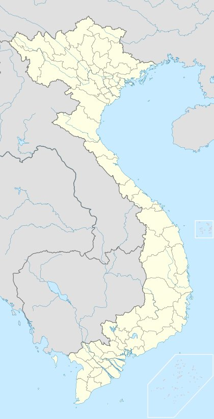
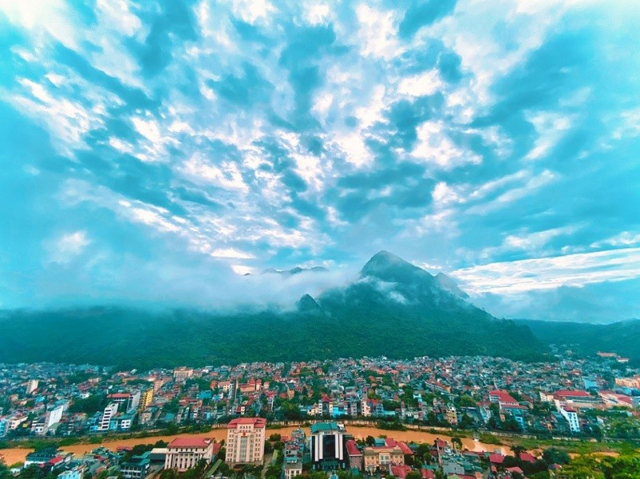

THÀNH PHỐ HÀ GIANG

Hà Giang là tỉnh địa đầu của Tổ quốc, phía Đông giáp tỉnh Cao Bằng, phía Tây giáp tỉnh Yên Bái và Lào Cai, phía Nam giáp tỉnh Tuyên Quang, phía Bắc giáp Trung Quốc.
Các cung đường Hà Giang quanh co, cheo leo vốn đầy thách thức cho người lái xe. Thế nhưng khi bạn phóng tầm mắt xung quanh, căng thẳng nhường lại chỗ cho cảm giác thư thái khi chiêm ngưỡng vẻ đẹp cao nguyên.
HÀ GIANG MÙA NÀO ĐẸP NHẤT

Là tỉnh miền núi cao nên khí hậu ở Hà Giang lạnh rõ rệt so với vùng thấp và trung du kế cận. Nhiệt độ trung bình năm khoảng 21-23 độ C. Nét nổi bật của khí hậu là độ ẩm cao trong năm, mưa nhiều và kéo dài.
Bạn có thể du lịch Hà Giang vào bất kỳ mùa nào trong năm.
Người ta thường đến Hà Giang vào mùa thu lúa chín vàng. Thời gian đẹp nhất là tháng 10, 11 và 12, khi hoa tam giác mạch hay những cánh đồng cải khoe sắc. Còn mùa xuân, hoa mơ, hoa mận nở trắng rừng khiến bạn như đang bồng bềnh trên mây.
Tháng 5, những thửa ruộng lấp loáng mùa nước đổ. Tháng 6 và tháng 7, nhiều người bỏ lỡ Hà Giang vì những cơn mưa hè réo rắt bất chợt. Nhưng cũng nhờ sự ẩm ướt này, núi rừng nơi đây lại khoác lên mình một màu xanh mướt say đắm lòng .
CỘT MỐC KM SỐ 0

Có thể nói, Hà Giang là một điểm đến khiến bao du khách phải choáng ngợp với cảnh sắc cao nguyên đá hùng vĩ. Khắp các trang mạng xã hội, không khó để bắt gặp hình ảnh các bạn trẻ hào hứng check-in tại các điểm đến ấn tượng ở Hà Giang. Từ những cung đường đèo uốn lượn đến những cánh đồng hoa ngát xanh. Tuy nhiên, chưa cần đến đèo Mã Pì Lèng, chưa cần đi sông Nho Quế hay các bản làng người Mông, một tọa độ khiến hội mê xê dịch phải phát cuồng đó chính là cái tên "Cột mốc số 0" ở thành phố Hà Giang.Cột mốc số 0 hay Km số 0 Hà Giang là một điểm đến "được lòng" rất nhiều dân phượt. Chẳng phải vì cột mốc ấy có hình dáng gì đặc biệt hay nó được đặt tại một địa điểm du lịch nổi tiếng. Đây chỉ là một trụ nhỏ bằng bê tông tương tự như các cột mốc chỉ km tại mọi tuyến quốc lộ ở nước ta.
Một trụ đá nhỏ nhưng lại chính là điểm bắt đầu của quốc lộ 2, nối giữa 2 tỉnh Hà Giang và Thủ đô Hà Nội. Nghe thì chả có gì đặc biệt nhưng thực chất nếu bạn muốn bắt đầu 1 chuyến du lịch Hà Giang thì bắt buộc phải đi qua cột mốc ấy.
Dù đã tồn tại qua bao năm tháng, thế nhưng trong vài năm trở lại đây cột mốc Km số 0 Hà Giang bỗng dưng nổi tiếng trên các trang mạng xã hội và trở thành tọa độ check-in "hót hòn họt", không thể bỏ qua của cộng đồng mê xê dịch. Trên thực tế, có đến 2 cột mốc Km số 0 nằm tại trung tâm thành phố Hà Giang. Một cột mốc nằm trong công viên đối diện quảng trường 26 – 3 với kích thước lớn (cột mốc đánh dấu lãnh thổ) và cột mốc nhỏ còn lại nằm trên đường Nguyễn Trãi, quốc lộ 2 (cột mốc chỉ dẫn giao thông).So với nhiều điểm đến ở Hà Giang khác, Km số 0 gần như không có trải nghiệm gì cả. Tuy nhiên đây lại là nơi mang giá trị về mặt tinh thần. Một bức ảnh check in ở đây khẳng định rằng thanh xuân này bạn đã kịp đến Hà Giang, khám phá một vùng đất xinh đẹp, kỳ vĩ và lãng mạn bậc nhất miền núi phía Bắc nước ta.Có thể nói, cột trụ bằng bê tông bé nhỏ để chỉ dẫn giao thông nhưng lại trở thành biểu tượng quen thuộc xuất hiện trong hầu hết các bức hình của du khách mỗi khi đặt chân đến Hà Giang. Nó trở thành điểm khởi đầu của một hành trình đầy ý nghĩa gắn với niềm tự hào về màu cờ Tổ quốc trên cao nguyên đá kỳ vỹ này.
NÚI CẨM SƠN

Vị trí:
Núi Cẩm Sơn nằm tại huyện Quản Bạ, tỉnh Hà Giang, Việt Nam.
Núi Cẩm Sơn có vị trí gần với thị trấn Tam Sơn, nổi tiếng với cảnh quan thiên nhiên đẹp và vùng đất của người H'Mông.
Đặc điểm:
Núi Cẩm Sơn là một trong những điểm đến du lịch phổ biến ở Hà Giang, thu hút khách du lịch bởi cảnh quan thiên nhiên hùng vĩ và đẹp mắt.
Núi Cẩm Sơn thường được du khách ghé thăm để chiêm ngưỡng cảnh sắc hữu tình của núi rừng, thung lũng và ruộng bậc thang.
Hoạt động du lịch:
Du khách thường thích tham gia các hoạt động như trekking, leo núi, ngắm cảnh, và khám phá văn hóa của các dân tộc bản địa.
Có nhiều con đường mòn dẫn đến đỉnh núi và các điểm ngắm cảnh đẹp.
Lưu ý:
Trước khi tham gia bất kỳ hoạt động nào tại núi Cẩm Sơn, du khách nên chuẩn bị trang thiết bị cá nhân, đặc biệt là đồ dã ngoại, nước uống và thực phẩm.
Núi Cẩm Sơn là một trong những điểm đến tuyệt vời để khám phá cảnh quan thiên nhiên và văn hóa ở Hà Giang, mang lại cho du khách trải nghiệm đầy thú vị và ấn tượng về vùng đất núi phía Bắc của Việt Nam.